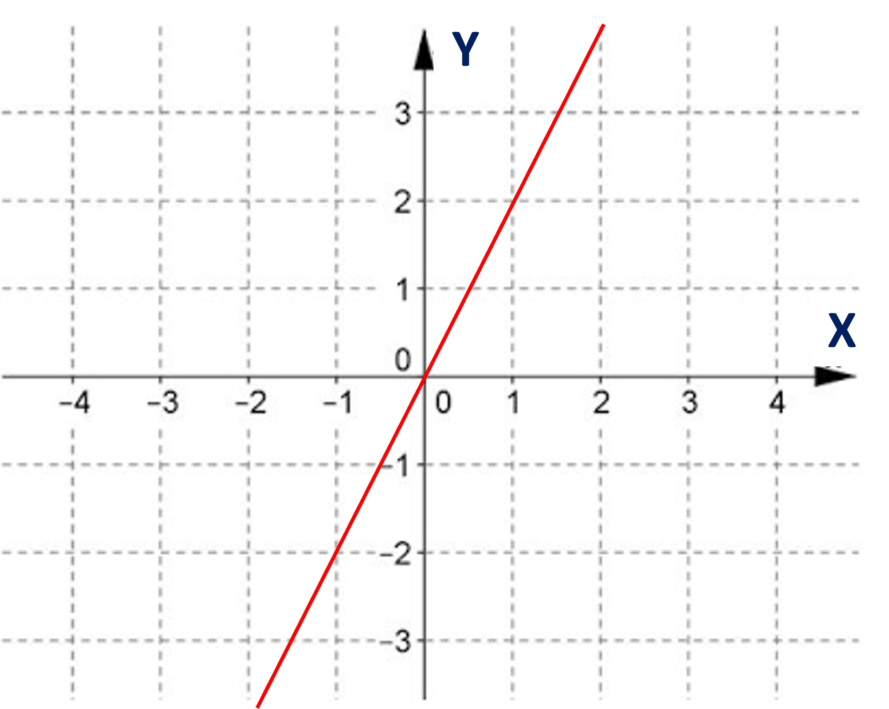
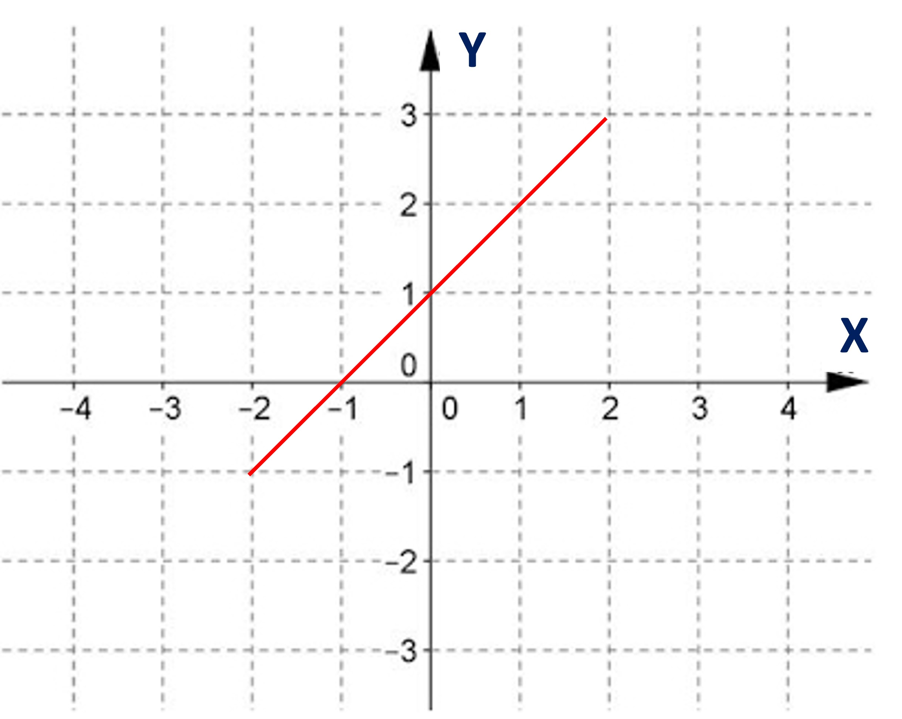
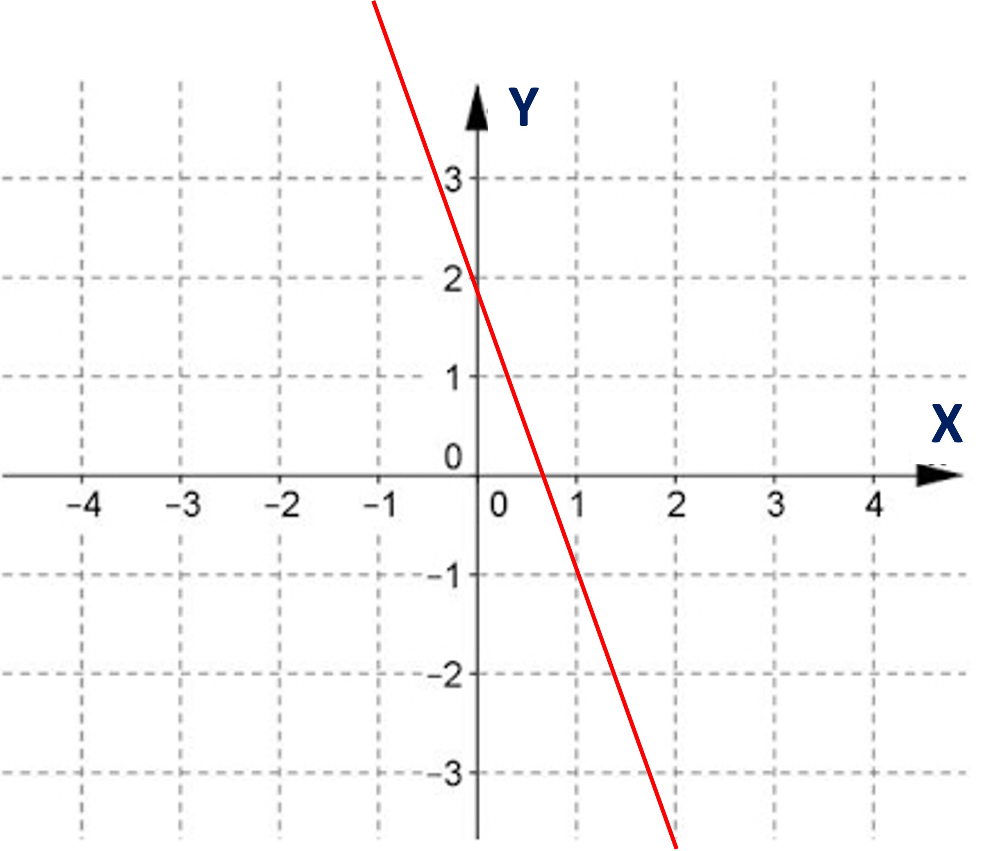
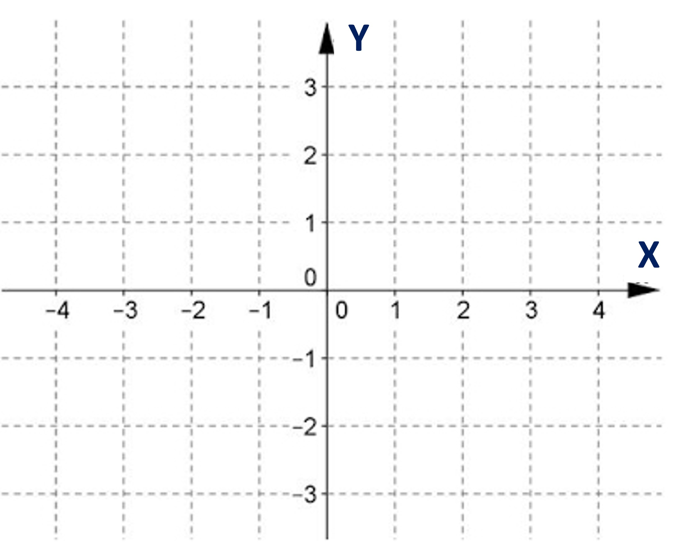
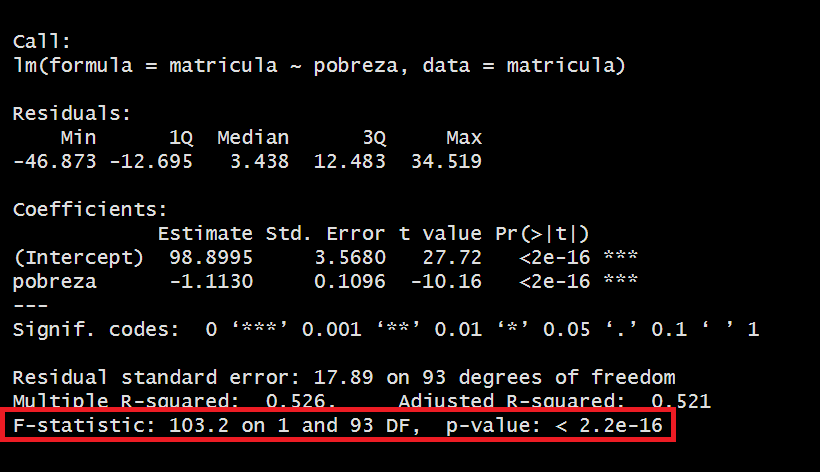
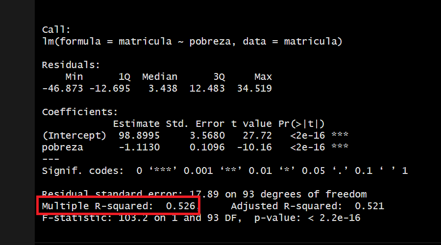
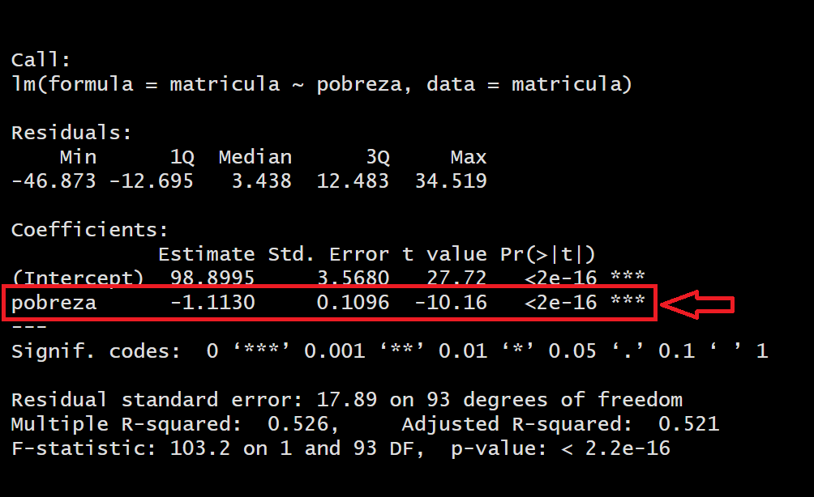

library(tidyverse)
library(haven)
library(rio)
matricula<-import("https://github.com/ChristianChiroqueR/banco_de_datos/raw/main/DATA_internacional/matricula.xlsx")
colnames(matricula)<-c("pais","matricula","pbiPC","pobreza","urbano","gastoeducacion","ratio_prof","alcohol","natalidad_ado")9 Regresión Lineal Simple
9.1 Objetivos de la sesión
Introducir a los estudiantes en el concepto y la aplicación de la regresión lineal, utilizada para modelar y analizar la relación entre una variable dependiente y una variable independiente. Se abordarán los siguientes temas: concepto de regresión lineal, construcción de modelo de regresión lineal e interpretación de los resultados.
9.2 Conceptos básicos
La regresión lineal simple es una técnica estadística que busca modelar la relación entre dos variables: una variable dependiente y una variable independiente.
Vamos por partes:
9.2.1 Variable dependiente y variable independiente
A diferencia de la correlación, en este caso sí afirmamos que existe dependencia entre las variables.
En estadística, los términos “variable dependiente” y “variable independiente” se utilizan para describir las diferentes categorías de variables en un estudio o análisis.
La variable dependiente es aquella que se estudia o analiza para determinar cómo es afectada o influenciada por otras variables. También se conoce como variable de respuesta o variable de interés. Es común representarla en el eje vertical de un gráfico de dispersión o en la fórmula del modelo estadístico con el símbolo Y.
Las variables independientes son aquellas que se consideran como posibles explicaciones o factores que pueden influir en la variable dependiente. También se conocen como variables predictoras o variables explicativas. Se suelen representar en el eje horizontal de un gráfico o en la fórmula del modelo estadístico con la letra X.
Tip
La variable dependiente es la que se estudia o analiza para determinar su relación con otras variables, mientras que las variables independientes son las que se utilizan para explicar o predecir los cambios en la variable dependiente.
9.2.2 Ecuación de la recta
En la regresión lineal simple, se asume que la relación entre las variables puede ser aproximada por una línea recta en el espacio bidimensional. Para ello debemos acordarnos algunos elementos básicos que aprendimos desde la escuela:
\[ Y = \beta_0 + \beta_1X \]
Donde:
Y es la variable dependiente que se quiere predecir o estimar.
X es la variable independiente que se utiliza para predecir Y.
β₀ es la intersección de la línea (ordenada al origen).
β₁ es la pendiente de la línea (indica cuánto varía Y por cada unidad de X).
Tener en cuenta que si:
Si β₁ es positivo, Y aumenta cuando X aumenta.Es una relación directa / positiva.
Si β₁ es negativo, Y aumenta cuando X disminuye.Es una relación inversa / negativa.
Si β₁ es cero.Y no cambia cuando X varía. No existe relación entre las variables.
EJEMPLO

Para calcular la ecuación nos preguntamos:
¿En qué punto la línea cruza el eje Y? (intercepto)
Vemos que la recta atraviesa el eje Y en el número 1
Por cada unidad de X, ¿cuánto varía el valor de Y? (pendiente)
Cada vez que X aumenta en una unidad, Y varía en 2 unidades
Entonces nuestra ecuación será:
\[ Y = 1 + 2X \]
9.2.3 Ejemplos
Probemos con algunos ejemplos adicionales. Determinemos la ecuación de estas rectas.
Ejemplo 1:

Ejemplo 2:

Ejemplo 3:

Por último, genera las rectas cuya ecuación es:
Ejemplo 4: \(y= -1 + x\)

Ejemplo 5: \(y= 2 + (0*x)\)
9.3 Regresión lineal simple
9.3.1 Pregunta de investigación
¿Es posible explicar el porcentaje anual de matrícula escolar a nivel secundaria por país con la variable pobreza?
Abrimos la base de datos:
9.3.2 Correlación lineal para una regresión lineal
El propósito de la regresión lineal es encontrar una línea que se ajuste mejor a la nube de puntos.
Para el caso de matrícula con pobreza, podemos explorar primeramente si cuenta con una regresión lineal.
¿Qué podemos visualizar a nivel de gráfico?
matricula |>
ggplot()+
aes(matricula, pobreza)+
geom_point()
¿Es posible evidenciar una correlación lineal estadísticamente significativa entre ambas variables? ¿Recuerdas cómo interpretar el coeficiente y la prueba de hipótesis?
cor.test(matricula$matricula, matricula$pobreza)
Pearson's product-moment correlation
data: matricula$matricula and matricula$pobreza
t = -10.16, df = 93, p-value < 2.2e-16
alternative hypothesis: true correlation is not equal to 0
95 percent confidence interval:
-0.8086310 -0.6134162
sample estimates:
cor
-0.7252916 
9.3.3 Hallar la ecuación para dibujar la mejor línea
Como vimos anteriormente, para dibujar la línea debemos contar, este caso, con los dos elementos clave: intercepto y pendiente de x.
El objetivo de la regresión lineal simple es estimar los coeficientes β₀ y β₁ a partir de los datos observados, de manera que la línea ajustada se aproxime lo mejor posible a los valores reales de la variable dependiente.
Esta estimación se realiza utilizando el método de mínimos cuadrados, que busca minimizar la suma de los errores al cuadrado entre los valores observados y los valores predichos por el modelo (dónde antes habías visto la necesidad de elevar al cuadrado una resta? Por qué y para qué?).
\[ y = \beta_0 + \beta_1x \]
Nota
Regresión: Técnica que permite modelar y analizar la relación lineal entre dos variables, proporcionando una forma de estimar y predecir valores de la variable dependiente en función de la variable independiente.
9.3.4 Generar la regresión
El comando para generar una regresión lineal es bastante simple. Le tenemos que indicar al programa cuál es nuestra variable dependiente y cuál nuestra independiente. Luego, debemos utilizar la función lm():
regresion1<-lm(matricula~pobreza, data=matricula)
summary(regresion1)
Call:
lm(formula = matricula ~ pobreza, data = matricula)
Residuals:
Min 1Q Median 3Q Max
-46.873 -12.695 3.438 12.483 34.519
Coefficients:
Estimate Std. Error t value Pr(>|t|)
(Intercept) 98.8995 3.5680 27.72 <2e-16 ***
pobreza -1.1130 0.1096 -10.16 <2e-16 ***
---
Signif. codes: 0 '***' 0.001 '**' 0.01 '*' 0.05 '.' 0.1 ' ' 1
Residual standard error: 17.89 on 93 degrees of freedom
Multiple R-squared: 0.526, Adjusted R-squared: 0.521
F-statistic: 103.2 on 1 and 93 DF, p-value: < 2.2e-16De forma preliminar, hasta el momento podemos ver que los coeficientes calculados para la construcción de esta línea son los siguientes:
\[ matricula = 98.8995 - (1.1130*pobreza) \]
Ciertamente, tenemos mucha información en este resultado. Para analizarlo, vamos a desagregar cada uno de los resultados.
Tip
El signo del coeficiente \(\beta_1\) indica la relación que tiene la variable dependiente con la variable independiente. En este caso vemos que la relación es indirecta (mientras menos pobreza, la matrícula es mayor).
9.3.5 ¿Mi modelo es válido?: ANOVA
Ahora probamos su validez con la técnica ANOVA.

El ANOVA proporciona información sobre la calidad general del modelo, indicando si el modelo en su conjunto es útil para predecir o explicar la variable dependiente. Tenemos las siguientes hipótesis a poner a prueba:
| Hipótesis | Descripción |
|---|---|
| Hipótesis nula | El modelo de regresión no es válido |
| Hipótesis alterna | El modelo de regresión es válido |
En este caso, al obtener un p-valor menor al alpha (0.05) podemos rechazar la hipótesis nula, concluyendo que nuestro modelo sí es válido.
9.3.6 ¿Cuánto explica mi modelo?: R2
El coeficiente de determinación (R²) en regresión es una medida estadística que indica la proporción de la varianza de la variable dependiente (Y) que puede explicarse por la variable independiente (X) en el modelo de regresión. En otras palabras, el R² representa la cantidad de variabilidad en los valores de Y que es capturada por el modelo de regresión.
El valor de R² varía entre 0 y 1.
Un R² de 0 significa que el modelo no explica ninguna variabilidad en Y, mientras que un R² de 1 indica que el modelo explica toda la variabilidad en Y.
En general, un valor de R² más cercano a 1 indica un mejor ajuste del modelo y una mayor capacidad de explicar la variabilidad observada en la variable dependiente.
Para nuestros fines seguiremos utilizando de referencia la escala de Cohen:


Hemos obtenido un R2 de 0.526 por lo que concluimos:
Un coeficiente de determinación (r cuadrado) de 0.52 indica que aproximadamente el 52% de la variabilidad de la variable dependiente puede ser explicada por las variables independientes incluidas en el modelo de regresión.
En otras palabras, esto significa que alrededor del 52% de las fluctuaciones en los valores observados de la variable dependiente pueden ser atribuidas a las variables independientes utilizadas en el modelo. Cuanto más cercano esté el valor de r cuadrado a 1, mayor será la proporción de la variabilidad explicada por el modelo y mejor será el ajuste del modelo a los datos.
Es importante tener en cuenta que un r cuadrado de 0.52 también implica que aproximadamente el 48% de la variabilidad de la variable dependiente no está explicada por las variables independientes incluidas en el modelo. Esta variabilidad restante puede ser atribuida a otros factores no considerados en el modelo o al azar!
Siguiendo nuestro intervalo, diremos que el modelo tiene un ALTO nivel explicativo.
9.3.7 ¿Mi variable x permite explicar y?: P-valor de coeficientes
La significancia estadística de los coeficientes en un modelo de regresión se refiere a la pregunta de si los coeficientes estimados son estadísticamente diferentes de cero o no. En otras palabras, se evalúa si hay evidencia suficiente en los datos para afirmar que la relación entre la variable independiente y la variable dependiente es real y no se debe simplemente al azar.
Para ello, se realizan pruebas de hipótesis por cada uno de los coeficientes calculados. En este caso, al ser regresión lineal sólo tenemos un coeficiente (β₁).
Para determinar la significancia estadística, se utiliza un valor de p, que indica la probabilidad de obtener un resultado igual o más extremo que el observado, asumiendo que la hipótesis nula es verdadera (la hipótesis nula generalmente establece que no hay relación entre las variables). Si el valor de p es menor que un umbral predeterminado (por ejemplo, 0.05), se considera que el coeficiente es estadísticamente significativo, lo que significa que hay suficiente evidencia para rechazar la hipótesis nula y concluir que el coeficiente es diferente de cero.

| Hipótesis | Descripción |
|---|---|
| Hipótesis nula | La variable X1 no aporta al modelo propuesto |
| Hipótesis alterna | La variable X1 sí aporta al modelo propuesto |
En este caso, para la variable Pobreza, al obtener un p-valor menor al alpha (0.05) podemos rechazar la hipótesis nula, concluyendo que efectivamente SÍ aporta al modelo para explicar el nivel de matrícula escolar en el mundo.
Advertencia
En este caso siempre vemos el p-valor de la variable independiente. No del intercepto!
9.3.8 Dibujamos la recta
\[ Matrícula = 98.8995 + -1.1130 * Pobreza \]
La ecuación de regresión permite predecir los valores de la variable dependiente para nuevos valores de la variable independiente. Puedes usar la ecuación para estimar cómo cambiará la variable dependiente en función de los cambios en la variable independiente. Esto es especialmente útil en problemas de pronóstico o en la estimación de resultados futuros.
Podemos generar un gráfico interesante utilizando la extensión de ggplot2 ggpmisc.
library(ggpmisc)Cargando paquete requerido: ggppRegistered S3 methods overwritten by 'ggpp':
method from
heightDetails.titleGrob ggplot2
widthDetails.titleGrob ggplot2
Adjuntando el paquete: 'ggpp'The following object is masked from 'package:ggplot2':
annotateRegistered S3 method overwritten by 'ggpmisc':
method from
as.character.polynomial polynommatricula |>
ggplot()+
aes(x=pobreza, y=matricula) +
stat_poly_line(se = FALSE) +
stat_poly_eq(use_label(c("eq", "R2")),label.x = "right") +
stat_fit_deviations(colour = "red")+
geom_point()
https://cran.r-project.org/web/packages/ggpmisc/readme/README.html
En este caso vemos que las distancias de lo observado a lo calculado por el modelo es el error aleatorio.
Formalmente debemos decir que ε es el término de error que representa la variación no explicada por el modelo. En otras palabras, el ε es la acumulación de las distancias de los puntos a la línea recta construida. A nivel de ecuación, el error se redacta de la siguiente manera.

Ejercicio 1
Ahora realiza genere modelo de regresión lineal simple para predecir matrícula con la variable PBIpc.
Corrobore la correlación lineal entre ambas variables.
Genere el modelo, utilizando
lm(). Indique la ecuación del modelo y qué relación tendría la dependiente con la independiente.¿El modelo es válido?
¿Cuánto explica?
¿La variable x aporta el modelo?
Ejercicio 2
Haciendo uso de la base elecciones_2011 se desea explorar los factores determinantes del porcentje de respaldo electoral al candidato Ollanta Humala. Genere un modelo de regresión lineal utilizando la variable “pobreza” como variable independiente.
Corrobore la correlación lineal entre ambas variables.
Genere el modelo, utilizando
lm(). Indique la ecuación del modelo y qué relación tendría la dependiente con la independiente.¿El modelo es válido?
¿Cuánto explica?
¿La variable x aporta el modelo?